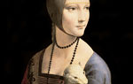
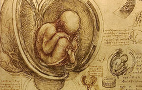
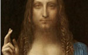
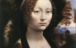
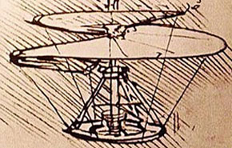

작품영역 초 상 화 밀라노 귀족 부인의 초상 이 작품은 일명<아름다운 철물상 여인>이라고도 불리는데'페로니에'는 모델의 이마에 부착된 장식의 이름에서 유래한 것이다.이후 제목에 ‘La Belle’라는 형용사가 붙음으로써 ‘아름다운 철물상 여인’이라는 뜻으로 변했다.  담비를 안고 있는 여인 <담비를 안고 있는 여인>은 밀라노의 공작 루도비코 스포르차의연인이었던 체칠리아 갈레라니의 초상화로 알려져 있다.장신구나 옷 장식을 최소화하면서 젊은 여인의 아름다움을 효과적으로 표현하고 있다. 과학과 예술의 접목  자궁 안의 태아
작품영역 초 상 화  살바토르 문디 ‘남자 모나리자’라고도 불리는 이 작품은 약 1500년 무렵 프랑스 국왕 루이 12세의 의뢰를 받아 제작된 것으로 추측된다.왼손엔 크리스털 구슬을 올려놓고, 오른손으로 축복을 내리는 예수의 모습을 담은 레오나르도 다빈치의 유화 작품. <살바토르 문디>는 라틴어로 ‘구원자’, 즉, 예수를 뜻한다.  지네브라 데 벤치 이 초상화의 주인공인 지네브라 데 벤치는15세기 후반 피렌체에서 미모와 지성으로 유명했던 여성이다. 이 초상화는 1474년 그녀와 루이지 디 베르나르도 니콜리니와의 결혼을 기념하기 위해서 그려진 것으로 추정된다. 천재의 발명품  40여가지 발명품